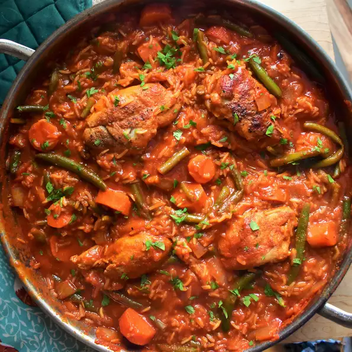

Odin Recipes
Moroccan chicken thighs

This is a very delicious recipe , and a famous one ; moroccan chicken thighs are the main plate served in all moroccan wedding , funerals , etc...
You can access the recipe by clicking here
Jollof Rice
Fried rice is a dish of cooked rice that has been stir-fried in a wok or a frying pan and is usually mixed with other ingredients such as eggs, vegetables, seafood, or meat. It is often eaten by itself or as an accompaniment to another dish. Fried rice is a popular component of East Asian, Southeast Asian and certain South Asian cuisines, as well as a staple national dish of Indonesia. As a homemade dish, fried rice is typically made with ingredients left over from other dishes, leading to countless variations. [1] first developed during the Sui Dynasty in China and as such all fried rice dishes can trace their origins to Chinese fried rice
You can check out this awesome Recipe by clicking here